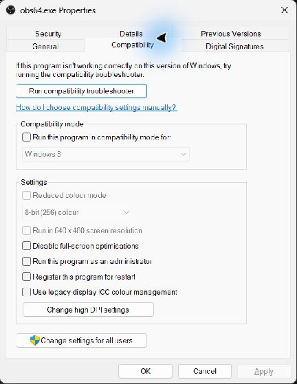

Используйте только при подтверждённой проблеме разрешений
Обычно OBS и Social Stream не требуют прав администратора. Запускайте оба приложения обычным способом, если несоответствие прав Windows не подтверждено и поддержка специально не попросила проверить этот режим.
Пустой объединённый чат, старый URL браузерного источника или устаревший кэш OBS обычно исправляются заменой URL и обновлением кэша, а не режимом администратора.
Если одно приложение запущено с повышенными правами, а другое нет, Windows может ограничить их взаимодействие. Для проверки несоответствия прав сначала закройте оба приложения и запустите их с одинаковым уровнем прав.
Однократная проверка запуска от администратора
- Закройте OBS Studio и настольное приложение Social Stream.
- Щёлкните ярлык OBS Studio правой кнопкой мыши и выберите Запуск от имени администратора.
- Подтвердите запрос контроля учётных записей Windows.
- Если проверяете несоответствие прав между приложениями, щёлкните ярлык Social Stream правой кнопкой и выберите Запуск от имени администратораи также подтвердите его запрос.
- Повторите в точности действия, которые не работали. Закончив, закройте оба приложения; однократное повышение прав заканчивается при их завершении.
Сначала предпочтительна эта проверка. Так можно выяснить, влияет ли повышение прав, не меняя постоянные настройки приложений.
Всегда запускать Social Stream от имени администратора
- Закройте Social Stream.
- Щёлкните ярлык правой кнопкой мыши и выберите Расположение файла. Если Windows открывает другой ярлык, щёлкните его правой кнопкой и выберите Расположение файла снова.
- Щёлкните правой кнопкой мыши socialstream.exe и выберите Свойства.
- Откройте Совместимость вкладке.
- Выберите Запускать эту программу от имени администратора, затем выберите Применить и ОК.

Типичная установка для текущего пользователя:
%LOCALAPPDATA%\Programs\socialstream\socialstream.exeПуть может отличаться, если вы выбрали другую папку установки.
Всегда запускать OBS от имени администратора
- Закройте OBS Studio.
- Щёлкните ярлык OBS Studio правой кнопкой мыши и выберите Расположение файла.
- Щёлкните правой кнопкой мыши obs64.exe и выберите Свойства.
- Откройте Совместимость вкладке.
- Выберите Запускать эту программу от имени администратора, затем выберите Применить и ОК.

Стандартный путь 64-разрядного OBS обычно такой:
%ProgramFiles%\obs-studio\bin\64bit\obs64.exeДля переносной или нестандартной установки путь может отличаться.
Снова отключить режим администратора
- Закройте приложение.
- Откройте у исполняемого файла Свойства → Совместимость вкладке.
- Очистить Запускать эту программу от имени администратора, затем выберите Применить и ОК.
- Сделайте то же для другого приложения, чтобы OBS и Social Stream вернулись к одинаковому обычному уровню прав.
Не отключайте контроль учётных записей. Сведения о приложениях с повышенными правами см. в объяснении режима администратора от Microsoft.